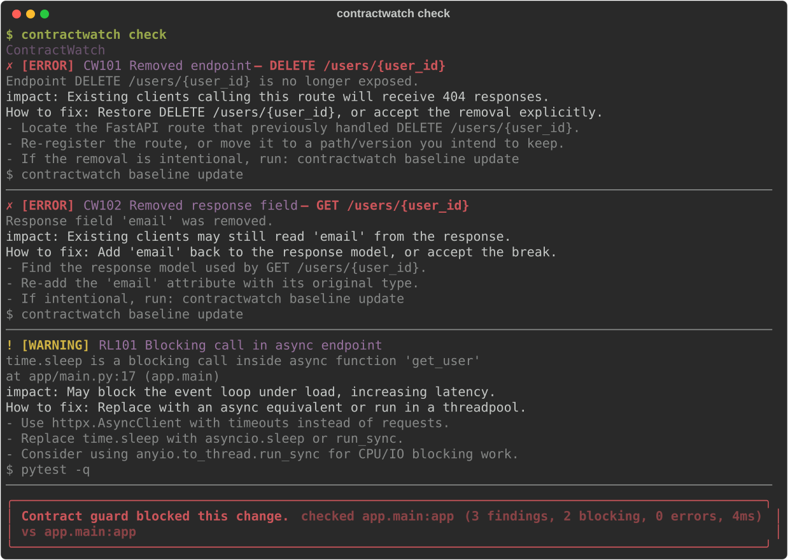
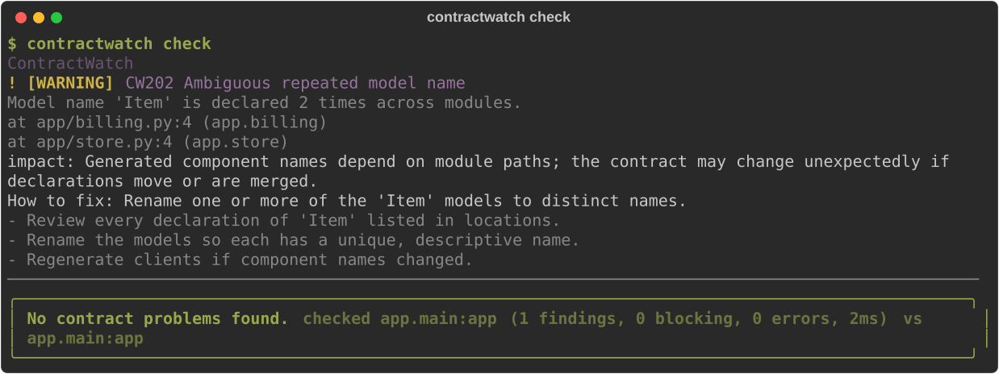

your api contract,
guarded.
You rename a response field, your tests pass, the frontend breaks. contractwatch snapshots your FastAPI contract and fails the commit or CI run when a change would break clients.
pip install contractwatch
python 3.11+ · fastapi · pydantic v2 · mit

use it
- init —
contractwatch initsaves the current contract as the baseline. commit it. - check —
contractwatch checkcompares against it. exit0safe,1blocking,2error. - accept — changed the api on purpose?
contractwatch baseline update.
what it catches
- breaking changes removed endpoints, removed or retyped fields, newly required inputs, narrowed enums.
- schema collisions two models with the same name in different modules.
- reliability pitfalls blocking calls in async endpoints, missing timeouts, duplicate routes.
every finding says what broke, who it hurts, and how to fix it.

diagnostic codes
ci and pre-commit
contractwatch init offers to install the pre-commit hook. in ci, run contractwatch check — the exit code does the rest.